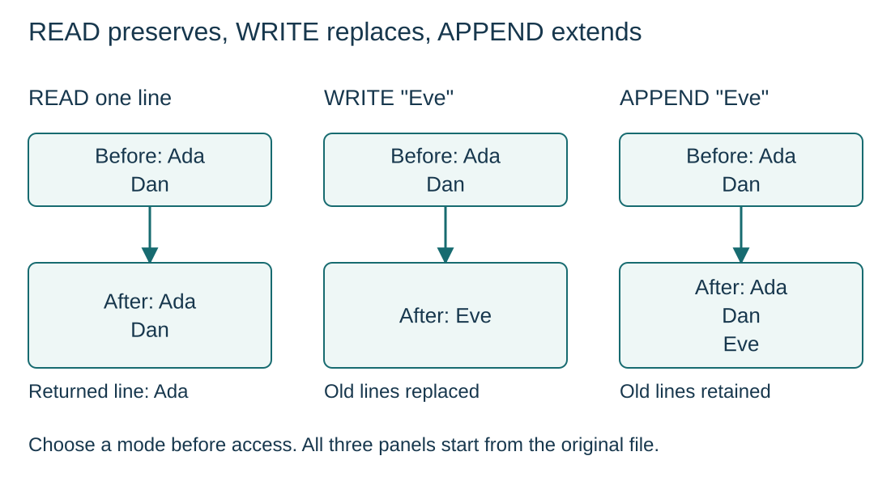

Select the correct file mode
S10.07.A01
Visual overview
READ preserves, WRITE replaces, APPEND extends

Visual transcript
- Each independent example starts with a file containing the lines Ada and Dan.
- READ Ada leaves both stored lines unchanged. Opening for WRITE replaces old contents; writing Eve leaves only Eve.
- Opening for APPEND and writing Eve leaves Ada, Dan, Eve in that order. Close the file after access.
Core explanation
Why storage must outlive the program
Files retain data on secondary storage after a program terminates and allow another program to reuse it. Variables and arrays alone do not provide this persistence. A text file is a sequence of lines.
Select the OPENFILE mode
| Mode | Effect |
|---|---|
| READ | Read existing lines. |
| WRITE | Create a file or replace its existing contents; suitable for a fresh report. |
| APPEND | Add at the end while retaining existing contents; suitable for extending a log. |